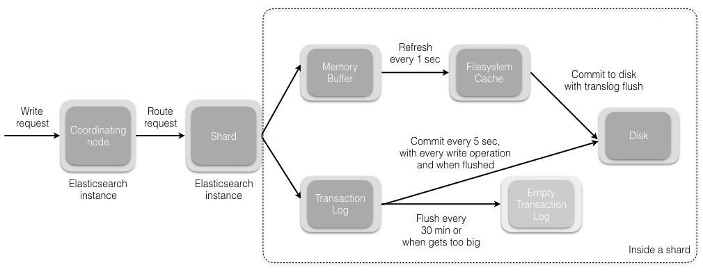
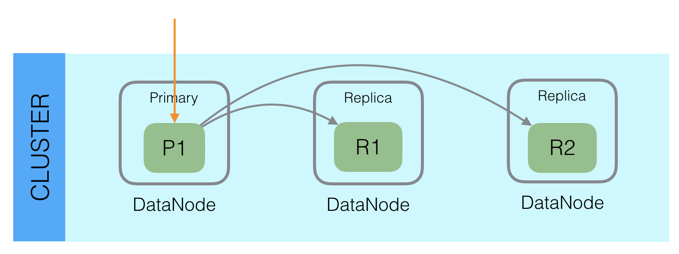
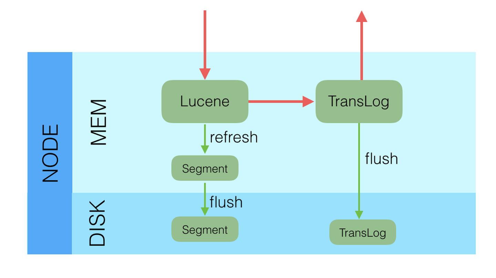
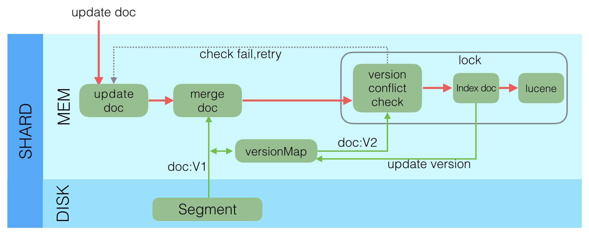
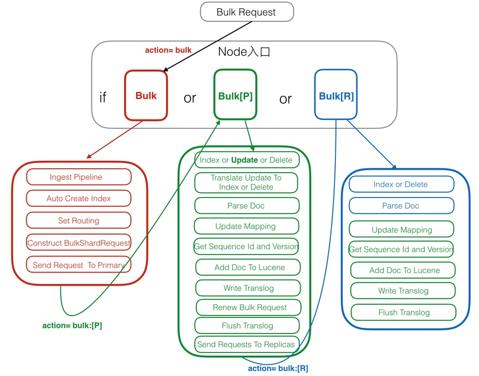

- 01 认知：ElasticSearch基础概念.md.html
- 02 认知：Elastic Stack生态和场景方案.md.html
- 03 安装：ElasticSearch和Kibana安装.md.html
- 04 入门：查询和聚合的基础使用.md.html
- 05 索引：索引管理详解.md.html
- 06 索引：索引模板(Index Template)详解.md.html
- 07 查询：DSL查询之复合查询详解.md.html
- 08 查询：DSL查询之全文搜索详解.md.html
- 09 查询：DSL查询之Term详解.md.html
- 10 聚合：聚合查询之Bucket聚合详解.md.html
- 11 聚合：聚合查询之Metric聚合详解.md.html
- 12 聚合：聚合查询之Pipline聚合详解.md.html
- 13 原理：从图解构筑对ES原理的初步认知.md.html
- 14 原理：ES原理知识点补充和整体结构.md.html
- 15 原理：ES原理之索引文档流程详解.md.html
- 16 原理：ES原理之读取文档流程详解.md.html
- 17 优化：ElasticSearch性能优化详解.md.html
- 18 大厂实践：腾讯万亿级 Elasticsearch 技术实践.md.html
- 19 资料：Awesome Elasticsearch.md.html
- 20 WrapperQuery.md.html
- 21 备份和迁移.md.html
15 原理：ES原理之索引文档流程详解
文档索引步骤顺序
单个文档
新建单个文档所需要的步骤顺序：

- 客户端向 Node 1 发送新建、索引或者删除请求。
- 节点使用文档的 _id 确定文档属于分片 0 。请求会被转发到 Node 3，因为分片 0 的主分片目前被分配在 Node 3 上。
- Node 3 在主分片上面执行请求。如果成功了，它将请求并行转发到 Node 1 和 Node 2 的副本分片上。一旦所有的副本分片都报告成功, Node 3 将向协调节点报告成功，协调节点向客户端报告成功。
多个文档
使用 bulk 修改多个文档步骤顺序：

- 客户端向 Node 1 发送 bulk 请求。
- Node 1 为每个节点创建一个批量请求，并将这些请求并行转发到每个包含主分片的节点主机。
- 主分片一个接一个按顺序执行每个操作。当每个操作成功时，主分片并行转发新文档（或删除）到副本分片，然后执行下一个操作。 一旦所有的副本分片报告所有操作成功，该节点将向协调节点报告成功，协调节点将这些响应收集整理并返回给客户端。
文档索引过程详解
整体的索引流程
先看下整体的索引流程

- 协调节点默认使用文档ID参与计算（也支持通过routing），以便为路由提供合适的分片。
shard = hash(document_id) % (num_of_primary_shards)
- 当分片所在的节点接收到来自协调节点的请求后，会将请求写入到Memory Buffer，然后定时（默认是每隔1秒）写入到Filesystem Cache，这个从Momery Buffer到Filesystem Cache的过程就叫做refresh；
- 当然在某些情况下，存在Momery Buffer和Filesystem Cache的数据可能会丢失，ES是通过translog的机制来保证数据的可靠性的。其实现机制是接收到请求后，同时也会写入到translog中，当Filesystem cache中的数据写入到磁盘中时，才会清除掉，这个过程叫做flush。
- 在flush过程中，内存中的缓冲将被清除，内容被写入一个新段，段的fsync将创建一个新的提交点，并将内容刷新到磁盘，旧的translog将被删除并开始一个新的translog。 flush触发的时机是定时触发（默认30分钟）或者translog变得太大（默认为512M）时。
分步骤看数据持久化过程
通过分步骤看数据持久化过程：write -> refresh -> flush -> merge
- write 过程

一个新文档过来，会存储在 in-memory buffer 内存缓存区中，顺便会记录 Translog（Elasticsearch 增加了一个 translog ，或者叫事务日志，在每一次对 Elasticsearch 进行操作时均进行了日志记录）。
这时候数据还没到 segment ，是搜不到这个新文档的。数据只有被 refresh 后，才可以被搜索到。
- refresh 过程

refresh 默认 1 秒钟，执行一次上图流程。ES 是支持修改这个值的，通过 index.refresh_interval 设置 refresh （冲刷）间隔时间。refresh 流程大致如下：
- in-memory buffer 中的文档写入到新的 segment 中，但 segment 是存储在文件系统的缓存中。此时文档可以被搜索到
- 最后清空 in-memory buffer。注意: Translog 没有被清空，为了将 segment 数据写到磁盘
- 文档经过 refresh 后， segment 暂时写到文件系统缓存，这样避免了性能 IO 操作，又可以使文档搜索到。refresh 默认 1 秒执行一次，性能损耗太大。一般建议稍微延长这个 refresh 时间间隔，比如 5 s。因此，ES 其实就是准实时，达不到真正的实时。
- flush 过程
每隔一段时间—例如 translog 变得越来越大—索引被刷新（flush）；一个新的 translog 被创建，并且一个全量提交被执行

上个过程中 segment 在文件系统缓存中，会有意外故障文档丢失。那么，为了保证文档不会丢失，需要将文档写入磁盘。那么文档从文件缓存写入磁盘的过程就是 flush。写入次怕后，清空 translog。具体过程如下：
- 所有在内存缓冲区的文档都被写入一个新的段。
- 缓冲区被清空。
- 一个Commit Point被写入硬盘。
- 文件系统缓存通过 fsync 被刷新（flush）。
- 老的 translog 被删除。
- merge 过程
由于自动刷新流程每秒会创建一个新的段 ，这样会导致短时间内的段数量暴增。而段数目太多会带来较大的麻烦。 每一个段都会消耗文件句柄、内存和cpu运行周期。更重要的是，每个搜索请求都必须轮流检查每个段；所以段越多，搜索也就越慢。
Elasticsearch通过在后台进行Merge Segment来解决这个问题。小的段被合并到大的段，然后这些大的段再被合并到更大的段。
当索引的时候，刷新（refresh）操作会创建新的段并将段打开以供搜索使用。合并进程选择一小部分大小相似的段，并且在后台将它们合并到更大的段中。这并不会中断索引和搜索。

一旦合并结束，老的段被删除：
- 新的段被刷新（flush）到了磁盘。 ** 写入一个包含新段且排除旧的和较小的段的新提交点。
- 新的段被打开用来搜索。
- 老的段被删除。

合并大的段需要消耗大量的I/O和CPU资源，如果任其发展会影响搜索性能。Elasticsearch在默认情况下会对合并流程进行资源限制，所以搜索仍然 有足够的资源很好地执行。
深入ElasticSearch索引文档的实现机制
TIP
作为选读内容。
写操作的关键点
在考虑或分析一个分布式系统的写操作时，一般需要从下面几个方面考虑：
- 可靠性：或者是持久性，数据写入系统成功后，数据不会被回滚或丢失。
- 一致性：数据写入成功后，再次查询时必须能保证读取到最新版本的数据，不能读取到旧数据。
- 原子性：一个写入或者更新操作，要么完全成功，要么完全失败，不允许出现中间状态。
- 隔离性：多个写入操作相互不影响。
- 实时性：写入后是否可以立即被查询到。
- 性能：写入性能，吞吐量到底怎么样。
Elasticsearch作为分布式系统，也需要在写入的时候满足上述的四个特点，我们在后面的写流程介绍中会涉及到上述四个方面。
接下来,我们一层一层剖析Elasticsearch内部的写机制。
Lucene的写
众所周知，Elasticsearch内部使用了Lucene完成索引创建和搜索功能，Lucene中写操作主要是通过IndexWriter类实现，IndexWriter提供三个接口：
public long addDocument();
public long updateDocuments();
public long deleteDocuments();
通过这三个接口可以完成单个文档的写入，更新和删除功能，包括了分词，倒排创建，正排创建等等所有搜索相关的流程。只要Doc通过IndesWriter写入后，后面就可以通过IndexSearcher搜索了，看起来功能已经完善了，但是仍然有一些问题没有解：
- 上述操作是单机的，而不是我们需要的分布式。
- 文档写入Lucene后并不是立即可查询的，需要生成完整的Segment后才可被搜索，如何保证实时性？
- Lucene生成的Segment是在内存中，如果机器宕机或掉电后，内存中的Segment会丢失，如何保证数据可靠性 ？
- Lucene不支持部分文档更新，但是这又是一个强需求，如何支持部分更新？
上述问题，在Lucene中是没有解决的，那么就需要Elasticsearch中解决上述问题。
我们再来看Elasticsearch中的写机制。
Elasticsearch的写
Elasticsearch采用多Shard方式，通过配置routing规则将数据分成多个数据子集，每个数据子集提供独立的索引和搜索功能。当写入文档的时候，根据routing规则，将文档发送给特定Shard中建立索引。这样就能实现分布式了。
此外，Elasticsearch整体架构上采用了一主多副的方式：

每个Index由多个Shard组成，每个Shard有一个主节点和多个副本节点，副本个数可配。但每次写入的时候，写入请求会先根据_routing规则选择发给哪个Shard，Index Request中可以设置使用哪个Filed的值作为路由参数，如果没有设置，则使用Mapping中的配置，如果mapping中也没有配置，则使用_id作为路由参数，然后通过_routing的Hash值选择出Shard（在OperationRouting类中），最后从集群的Meta中找出出该Shard的Primary节点。
请求接着会发送给Primary Shard，在Primary Shard上执行成功后，再从Primary Shard上将请求同时发送给多个Replica Shard，请求在多个Replica Shard上执行成功并返回给Primary Shard后，写入请求执行成功，返回结果给客户端。
这种模式下，写入操作的延时就等于latency = Latency(Primary Write) + Max(Replicas Write)。只要有副本在，写入延时最小也是两次单Shard的写入时延总和，写入效率会较低，但是这样的好处也很明显，避免写入后，单机或磁盘故障导致数据丢失，在数据重要性和性能方面，一般都是优先选择数据，除非一些允许丢数据的特殊场景。
采用多个副本后，避免了单机或磁盘故障发生时，对已经持久化后的数据造成损害，但是Elasticsearch里为了减少磁盘IO保证读写性能，一般是每隔一段时间（比如5分钟）才会把Lucene的Segment写入磁盘持久化，对于写入内存，但还未Flush到磁盘的Lucene数据，如果发生机器宕机或者掉电，那么内存中的数据也会丢失，这时候如何保证？
对于这种问题，Elasticsearch学习了数据库中的处理方式：增加CommitLog模块，Elasticsearch中叫TransLog。

在每一个Shard中，写入流程分为两部分，先写入Lucene，再写入TransLog。
写入请求到达Shard后，先写Lucene文件，创建好索引，此时索引还在内存里面，接着去写TransLog，写完TransLog后，刷新TransLog数据到磁盘上，写磁盘成功后，请求返回给用户。这里有几个关键点:
- 一是和数据库不同，数据库是先写CommitLog，然后再写内存，而Elasticsearch是先写内存，最后才写TransLog，一种可能的原因是Lucene的内存写入会有很复杂的逻辑，很容易失败，比如分词，字段长度超过限制等，比较重，为了避免TransLog中有大量无效记录，减少recover的复杂度和提高速度，所以就把写Lucene放在了最前面。
- 二是写Lucene内存后，并不是可被搜索的，需要通过Refresh把内存的对象转成完整的Segment后，然后再次reopen后才能被搜索，一般这个时间设置为1秒钟，导致写入Elasticsearch的文档，最快要1秒钟才可被从搜索到，所以Elasticsearch在搜索方面是NRT（Near Real Time）近实时的系统。
- 三是当Elasticsearch作为NoSQL数据库时，查询方式是GetById，这种查询可以直接从TransLog中查询，这时候就成了RT（Real Time）实时系统。四是每隔一段比较长的时间，比如30分钟后，Lucene会把内存中生成的新Segment刷新到磁盘上，刷新后索引文件已经持久化了，历史的TransLog就没用了，会清空掉旧的TransLog。
上面介绍了Elasticsearch在写入时的两个关键模块，Replica和TransLog，接下来，我们看一下Update流程：

Lucene中不支持部分字段的Update，所以需要在Elasticsearch中实现该功能，具体流程如下：
- 收到Update请求后，从Segment或者TransLog中读取同id的完整Doc，记录版本号为V1。
- 将版本V1的全量Doc和请求中的部分字段Doc合并为一个完整的Doc，同时更新内存中的VersionMap。获取到完整Doc后，Update请求就变成了Index请求。 加锁。
- 再次从versionMap中读取该id的最大版本号V2，如果versionMap中没有，则从Segment或者TransLog中读取，这里基本都会从versionMap中获取到。
- 检查版本是否冲突(V1==V2)，如果冲突，则回退到开始的“Update doc”阶段，重新执行。如果不冲突，则执行最新的Add请求。
- 在Index Doc阶段，首先将Version + 1得到V3，再将Doc加入到Lucene中去，Lucene中会先删同id下的已存在doc id，然后再增加新Doc。写入Lucene成功后，将当前V3更新到versionMap中。
- 释放锁，部分更新的流程就结束了。
介绍完部分更新的流程后，大家应该从整体架构上对Elasticsearch的写入有了一个初步的映象，接下来我们详细剖析下写入的详细步骤。
Elasticsearch写入请求类型
Elasticsearch中的写入请求类型，主要包括下列几个：Index(Create)，Update，Delete和Bulk，其中前3个是单文档操作，后一个Bulk是多文档操作，其中Bulk中可以包括Index(Create)，Update和Delete。
在6.0.0及其之后的版本中，前3个单文档操作的实现基本都和Bulk操作一致，甚至有些就是通过调用Bulk的接口实现的。估计接下来几个版本后，Index(Create)，Update，Delete都会被当做Bulk的一种特例化操作被处理。这样，代码和逻辑都会更清晰一些。
下面，我们就以Bulk请求为例来介绍写入流程。

- 红色：Client Node。
- 绿色：Primary Node。
- 蓝色：Replica Node。
Client Node
Client Node 也包括了前面说过的Parse Request，这里就不再赘述了，接下来看一下其他的部分。
- Ingest Pipeline
在这一步可以对原始文档做一些处理，比如HTML解析，自定义的处理，具体处理逻辑可以通过插件来实现。在Elasticsearch中，由于Ingest Pipeline会比较耗费CPU等资源，可以设置专门的Ingest Node，专门用来处理Ingest Pipeline逻辑。
如果当前Node不能执行Ingest Pipeline，则会将请求发给另一台可以执行Ingest Pipeline的Node。
- Auto Create Index
判断当前Index是否存在，如果不存在，则需要自动创建Index，这里需要和Master交互。也可以通过配置关闭自动创建Index的功能。
- Set Routing
设置路由条件，如果Request中指定了路由条件，则直接使用Request中的Routing，否则使用Mapping中配置的，如果Mapping中无配置，则使用默认的_id字段值。
在这一步中，如果没有指定id字段，则会自动生成一个唯一的_id字段，目前使用的是UUID。
- Construct BulkShardRequest
由于Bulk Request中会包括多个(Index/Update/Delete)请求，这些请求根据routing可能会落在多个Shard上执行，这一步会按Shard挑拣Single Write Request，同一个Shard中的请求聚集在一起，构建BulkShardRequest，每个BulkShardRequest对应一个Shard。
- Send Request To Primary
这一步会将每一个BulkShardRequest请求发送给相应Shard的Primary Node。
Primary Node
Primary 请求的入口是在PrimaryOperationTransportHandler的messageReceived，我们来看一下相关的逻辑流程。
- Index or Update or Delete
循环执行每个Single Write Request，对于每个Request，根据操作类型(CREATE/INDEX/UPDATE/DELETE)选择不同的处理逻辑。
其中，Create/Index是直接新增Doc，Delete是直接根据_id删除Doc，Update会稍微复杂些，我们下面就以Update为例来介绍。
- Translate Update To Index or Delete
这一步是Update操作的特有步骤，在这里，会将Update请求转换为Index或者Delete请求。首先，会通过GetRequest查询到已经存在的同_id Doc（如果有）的完整字段和值（依赖_source字段），然后和请求中的Doc合并。同时，这里会获取到读到的Doc版本号，记做V1。
- Parse Doc
这里会解析Doc中各个字段。生成ParsedDocument对象，同时会生成uid Term。在Elasticsearch中，_uid = type # _id，对用户，_Id可见，而Elasticsearch中存储的是_uid。这一部分生成的ParsedDocument中也有Elasticsearch的系统字段，大部分会根据当前内容填充，部分未知的会在后面继续填充ParsedDocument。
- Update Mapping
Elasticsearch中有个自动更新Mapping的功能，就在这一步生效。会先挑选出Mapping中未包含的新Field，然后判断是否运行自动更新Mapping，如果允许，则更新Mapping。
- Get Sequence Id and Version
由于当前是Primary Shard，则会从SequenceNumber Service获取一个sequenceID和Version。SequenceID在Shard级别每次递增1，SequenceID在写入Doc成功后，会用来初始化LocalCheckpoint。Version则是根据当前Doc的最大Version递增1。
- Add Doc To Lucene
这一步开始的时候会给特定_uid加锁，然后判断该_uid对应的Version是否等于之前Translate Update To Index步骤里获取到的Version，如果不相等，则说明刚才读取Doc后，该Doc发生了变化，出现了版本冲突，这时候会抛出一个VersionConflict的异常，该异常会在Primary Node最开始处捕获，重新从“Translate Update To Index or Delete”开始执行。
如果Version相等，则继续执行，如果已经存在同id的Doc，则会调用Lucene的UpdateDocument(uid, doc)接口，先根据uid删除Doc，然后再Index新Doc。如果是首次写入，则直接调用Lucene的AddDocument接口完成Doc的Index，AddDocument也是通过UpdateDocument实现。
这一步中有个问题是，如何保证Delete-Then-Add的原子性，怎么避免中间状态时被Refresh？答案是在开始Delete之前，会加一个Refresh Lock，禁止被Refresh，只有等Add完后释放了Refresh Lock后才能被Refresh，这样就保证了Delete-Then-Add的原子性。
Lucene的UpdateDocument接口中就只是处理多个Field，会遍历每个Field逐个处理，处理顺序是invert index，store field，doc values，point dimension，后续会有文章专门介绍Lucene中的写入。
- Write Translog
写完Lucene的Segment后，会以keyvalue的形式写TransLog，Key是_id，Value是Doc内容。当查询的时候，如果请求是GetDocByID，则可以直接根据_id从TransLog中读取到，满足NoSQL场景下的实时性要去。
需要注意的是，这里只是写入到内存的TransLog，是否Sync到磁盘的逻辑还在后面。
这一步的最后，会标记当前SequenceID已经成功执行，接着会更新当前Shard的LocalCheckPoint。
- Renew Bulk Request
这里会重新构造Bulk Request，原因是前面已经将UpdateRequest翻译成了Index或Delete请求，则后续所有Replica中只需要执行Index或Delete请求就可以了，不需要再执行Update逻辑，一是保证Replica中逻辑更简单，性能更好，二是保证同一个请求在Primary和Replica中的执行结果一样。
- Flush Translog
这里会根据TransLog的策略，选择不同的执行方式，要么是立即Flush到磁盘，要么是等到以后再Flush。Flush的频率越高，可靠性越高，对写入性能影响越大。
- Send Requests To Replicas
这里会将刚才构造的新的Bulk Request并行发送给多个Replica，然后等待Replica的返回，这里需要等待所有Replica返回后（可能有成功，也有可能失败），Primary Node才会返回用户。如果某个Replica失败了，则Primary会给Master发送一个Remove Shard请求，要求Master将该Replica Shard从可用节点中移除。
这里，同时会将SequenceID，PrimaryTerm，GlobalCheckPoint等传递给Replica。
发送给Replica的请求中，Action Name等于原始ActionName + [R]，这里的R表示Replica。通过这个[R]的不同，可以找到处理Replica请求的Handler。
- Receive Response From Replicas
Replica中请求都处理完后，会更新Primary Node的LocalCheckPoint。
Replica Node
Replica 请求的入口是在ReplicaOperationTransportHandler的messageReceived，我们来看一下相关的逻辑流程。
- Index or Delete
根据请求类型是Index还是Delete，选择不同的执行逻辑。这里没有Update，是因为在Primary Node中已经将Update转换成了Index或Delete请求了。
- Parse Doc
- Update Mapping
以上都和Primary Node中逻辑一致。
- Get Sequence Id and Version
Primary Node中会生成Sequence ID和Version，然后放入ReplicaRequest中，这里只需要从Request中获取到就行。
- Add Doc To Lucene
由于已经在Primary Node中将部分Update请求转换成了Index或Delete请求，这里只需要处理Index和Delete两种请求，不再需要处理Update请求了。比Primary Node会更简单一些。
- Write Translog
- Flush Translog
以上都和Primary Node中逻辑一致。
最后
上面详细介绍了Elasticsearch的写入流程及其各个流程的工作机制，我们在这里再次总结下之前提出的分布式系统中的六大特性：
- 可靠性：由于Lucene的设计中不考虑可靠性，在Elasticsearch中通过Replica和TransLog两套机制保证数据的可靠性。
- 一致性：Lucene中的Flush锁只保证Update接口里面Delete和Add中间不会Flush，但是Add完成后仍然有可能立即发生Flush，导致Segment可读。这样就没法保证Primary和所有其他Replica可以同一时间Flush，就会出现查询不稳定的情况，这里只能实现最终一致性。
- 原子性：Add和Delete都是直接调用Lucene的接口，是原子的。当部分更新时，使用Version和锁保证更新是原子的。
- 隔离性：仍然采用Version和局部锁来保证更新的是特定版本的数据。
- 实时性：使用定期Refresh Segment到内存，并且Reopen Segment方式保证搜索可以在较短时间（比如1秒）内被搜索到。通过将未刷新到磁盘数据记入TransLog，保证对未提交数据可以通过ID实时访问到。
- 性能：性能是一个系统性工程，所有环节都要考虑对性能的影响，在Elasticsearch中，在很多地方的设计都考虑到了性能，一是不需要所有Replica都返回后才能返回给用户，只需要返回特定数目的就行；二是生成的Segment现在内存中提供服务，等一段时间后才刷新到磁盘，Segment在内存这段时间的可靠性由TransLog保证；三是TransLog可以配置为周期性的Flush，但这个会给可靠性带来伤害；四是每个线程持有一个Segment，多线程时相互不影响，相互独立，性能更好；五是系统的写入流程对版本依赖较重，读取频率较高，因此采用了versionMap，减少热点数据的多次磁盘IO开销。Lucene中针对性能做了大量的优化。
参考文档
https://www.elastic.co/guide/cn/elasticsearch/guide/current/distrib-read.html
https://www.elastic.co/guide/cn/elasticsearch/guide/current/distrib-multi-doc.html
https://www.elastic.co/guide/cn/elasticsearch/guide/current/inside-a-shard.html
https://zhuanlan.zhihu.com/p/34674517
https://zhuanlan.zhihu.com/p/34669354
https://www.cnblogs.com/yangwenbo214/p/9831479.html